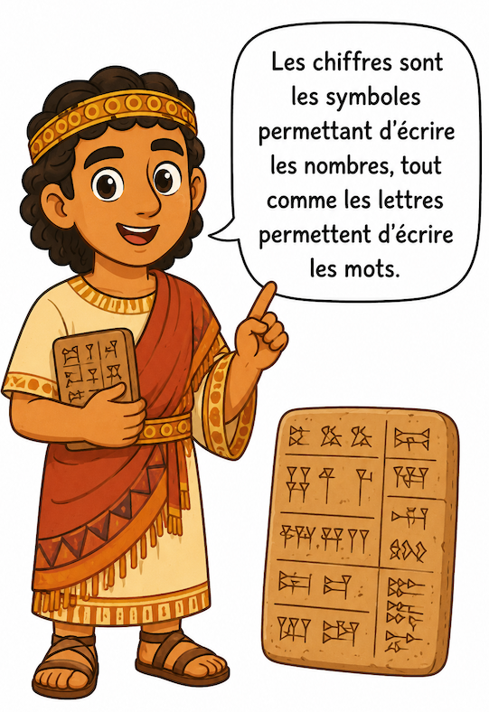
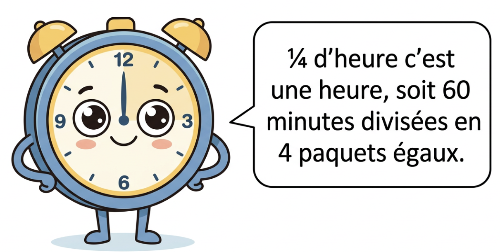

| Classe des milliards | Classe des millions | Classe des milliers | Classe des unités | ||||||||
|---|---|---|---|---|---|---|---|---|---|---|---|
| centaines | dizaines | unités | centaines | dizaines | unités | centaines | dizaines | unités | centaines | dizaines | unités |
| 3 | 0 | 5 | 6 | 0 | 4 | ||||||
Un même nombre peut se lire de plusieurs façons selon le rang choisi :

| Nombre | Décomposition | Lecture alternative |
|---|---|---|
| 500 | 5 × 100 5 centaines |
50 × 10 50 dizaines |
| 3 200 | (3 × 1 000) + (2 × 100) 3 milliers et 2 centaines |
32 × 100 32 centaines |
